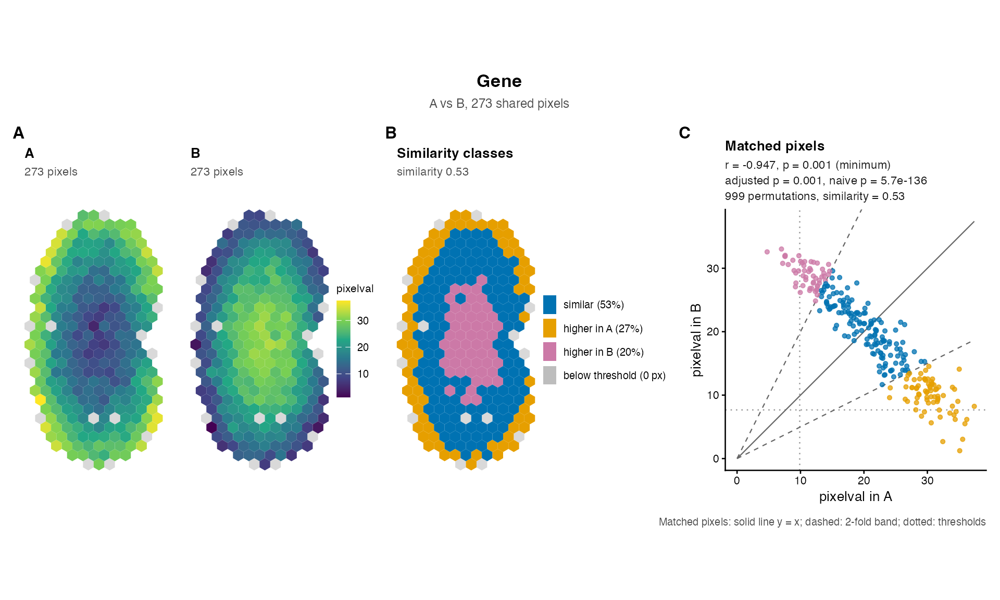
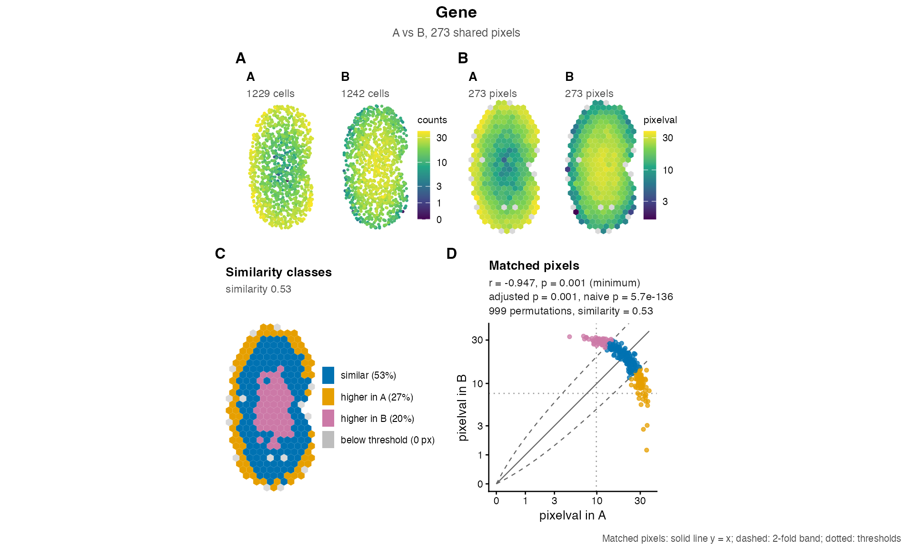

One figure for one gene of a compareSpatial()
result: the gene's expression in the two samples at native resolution
(the cells or spots, when the objects before rasterization are given),
on the shared grid of pixels, the similarity class of every pixel, and
the expression at matched pixels as a scatter plot labelled with the
gene's statistics. The panels are lettered, one letter for each pair of
maps, and the figure is ready to print, to save with
ggplot2::ggsave() or to adjust with patchwork and ggplot2.
Arguments
- result
A
compareSpatial()result.- gene
The gene (one row name of
result) to plot.- x, y
The two rasterized
SpatialExperimentobjects thatcompareSpatial()compared, in the same order (or, as there, a list of the two asxwithy = NULL). The sample names come fromresult.- native
Optional: a list of the two
SpatialExperimentobjects before rasterization, in the same order and in the same coordinate frame as the rasterized objects (for example aligned with STalign), for the native-resolution maps. DefaultNULL: no native maps.- assay
The assay of
xandyto draw: a name or an index, or two (one per object). DefaultNULL: the assay thatcompareSpatial()used, fromattr(result, "params").- nativeAssay
The assay of the
nativeobjects to draw, a name or an index, or two. DefaultNULL: the first assay.- panels
The panels to draw, in the order of Details; the figure keeps that order. Default: all.
"native"needsnativeand is dropped without it;"similarity"is dropped when the classes cannot be computed (Details).- transform
The scale of the expression maps and of the scatter axes:
"none"(default) or"log1p".One colour scale for the two maps of a pair (default
TRUE), or one per map (FALSE); see Details.- pointSize
The size of the points of the native maps (ggplot2's
size). DefaultNULL: \(30 / \sqrt{n}\) for \(n\) cells or spots, between 0.1 and 1.5 atbaseSize = 10(about 0.85 for a thousand cells, 0.3 for ten thousand) and scaled withbaseSize, so that the points of a dense tissue stay apart.- nativeUnit
What the points of the native maps are, for their subtitles:
"cells"(default),"spots"for Visium, or two (one per sample).- baseSize
The base font size in points: the size of the axis titles, from which every other text, the legend keys and the points are scaled. Default 10, for a figure about 7 to 11 inches wide, depending on the tissue; 7 for a journal page of up to 180 mm (Details, Layout and size).
- ...
Passed to
patchwork::wrap_plots():ncol,nrow,design,widths,heights,guides.
Value
A patchwork object (a ggplot2 figure of the panels, lettered,
titled with the gene and subtitled with the samples). Printing it draws
the figure; ggplot2::ggsave() saves it.
Details
Panels. In this order, each map with the sample name as its title. The two maps of a pair share one letter (shown at the first map), so the full figure is lettered A to D and the figure without native maps A to C:
"native"Two maps of the cells or spots of
native, coloured by the gene's expression innativeAssay, each cell or spot a point (pointSize). Drawn only whennativeis given."raster"Two maps of the shared pixels (those the result used), coloured by the gene's expression in
assay, the values the tests compared. The pixels are drawn with their geometry when the objects were rasterized with SEraster (colData()columngeometry, which needs the sf package), otherwise as square tiles the size of the distance between neighbouring pixels. The pixels that one sample lacks (present in the other sample only, so not used by the tests) are drawn in light grey in every map, so that the outline of the tissue is complete and the maps are comparable."similarity"The shared pixels coloured by their class in the similarity test, recomputed from the data with the result's settings (
foldChange,minPixels, and the gene's thresholdst1andt2): similar (\(|\log_2(y/x)| \le\)foldChange), higher in the first sample, higher in the second sample, or below the threshold in both. The legend gives the share of each class among the pixels above the threshold, so that the share of similar pixels is the gene'spercentSimilarity. Drawn when the result has the similarity columns and the gene'spercentSimilarityis notNA: not for a gene with negative values (a fold change needs non-negative values), nor for a gene with fewer pixels above the threshold thanminPixelsallows; the scatter plot then says why."scatter"The expression at matched pixels, the first sample horizontally and the second vertically, on equal axes, coloured by the same classes (plain when they are not available), with the line \(y = x\) (solid), the fold-change band (dashed, slopes \(2^{foldChange}\) and \(2^{-foldChange}\)) and the thresholds (dotted); the figure's caption is the key to these lines. Its subtitle gives the gene's row of the result:
correlationCoef(r),pValuePermute(p),pValuePermuteAdj(adjusted p),pValueNaive(naive p), the number of permutations andpercentSimilarity(similarity), each to two significant digits;NA, with the reason from the result'smessagecolumn, for a gene that was skipped or failed, whose status is then shown.pis marked(minimum)when it is \(1 / (nPermutations + 1)\), the smallest p-value the permutations can give, and a p-value of 0 is printed as< 2.2e-16.
A result without the correlation columns (tests = "similarity")
gives a scatter subtitle with the similarity alone; a result without the
similarity columns (tests = "correlation") has no similarity panel
and a plain scatter plot.
Layout and size. Without native maps the panels are in one row;
with them, the four expression maps are in the first row and the
similarity map and the scatter plot, larger, in a second row. The maps
keep the shape of the tissue, so the height of the figure sets the size
of the panels and the tissue sets the width the figure needs: a wider
canvas only adds blank space at the sides of a row. With the default
baseSize = 10, ggplot2::ggsave(..., height = 6.5) suits
two rows and height = 3.5 one row; a tissue that is taller than
wide, like the kidneys of the examples, then fills width = 7 (two
rows) or width = 8.5 (one row), and a square tissue about
width = 10 or 11; a narrower canvas clips the statistics
of the scatter plot. For a journal figure 180 mm wide, use
baseSize = 7 with ggsave(..., width = 180, height = 110,
units = "mm") for two rows or height = 60 for one row, and
reduce the width for a taller tissue; for a single column of 90 mm, use
baseSize = 6 and ncol = 2. Every text size follows
baseSize, and patchwork's & operator rescales the whole
figure: plotGene(...) & ggplot2::theme(text =
ggplot2::element_text(size = 7)). The layout can be changed with the
arguments of patchwork::wrap_plots() passed through ...,
for example ncol = 2, and the figure with patchwork's operators,
for example plotGene(...) + patchwork::plot_annotation(tag_levels =
NULL) to remove the letters, or tag_levels = list(c("a", "",
"b", "", "c", "d")) for lower-case letters (one entry per map, the
second map of a pair blank).
Colour scales. The expression maps use the viridis palette.
With sharedScale = TRUE the two native maps share one scale (one
legend) and so do the two raster maps, so that the colours of the two
samples are comparable. When the samples' values are on different scales
(for example raw counts in one and normalized values in the other, or
very different sequencing depths), sharedScale = FALSE gives every
map its own scale and legend. transform = "log1p" draws the
expression maps and the scatter axes on a \(\log(1 + v)\) scale, which
spreads out the low values of counts; the classes and the statistics are
unchanged, and the fold-change band is then curved. It needs values that
are not negative.
Checks. The objects must be those that compareSpatial()
compared: the function warns when they share another number of pixels
than the result used (the classes are then recomputed on the pixels
given), and when x and y appear to be swapped (the gene's
thresholds t1 and t2 are those of the other sample). A
named native list is put in the order of the result's samples
when its names are the sample names, and taken in order, with a warning,
when they are other names.
See also
plotOverview() for the figure of a whole result;
compareSpatial() for the columns the label shows. The
legacy plots of spatialSimilarity() results:
linearRegression(), pixelClass(),
savePlots(); and plotCorrelationGeneExp().
Examples
data(speKidney)
rast <- SEraster::rasterizeGeneExpression(speKidney, assay_name = "counts",
resolution = 0.2, fun = "mean",
square = FALSE)
ab <- compareSpatial(list(A = rast$A, B = rast$B), nPermutations = 999,
nThreads = 2)
#> compareSpatial: 1 gene on 273 shared pixels in 0.2 s (999 permutations in total, 2 threads)
# the pixels, the similarity classes and the scatter plot
plotGene(ab, "Gene", rast$A, rast$B)

# with the cells at native resolution, on a log1p colour scale
plotGene(ab, "Gene", rast$A, rast$B, native = speKidney[c("A", "B")],
transform = "log1p")

# save it: for these kidneys, taller than wide, 8.5 x 3.5 inches without
# native maps and 7 x 6.5 with them; for a journal figure, baseSize = 7
if (FALSE) { # \dontrun{
ggplot2::ggsave("Gene.pdf", plotGene(ab, "Gene", rast$A, rast$B),
width = 8.5, height = 3.5)
ggplot2::ggsave("Gene-cells.png",
plotGene(ab, "Gene", rast$A, rast$B,
native = speKidney[c("A", "B")]),
width = 7, height = 6.5, dpi = 300)
ggplot2::ggsave("Gene-140mm.pdf",
plotGene(ab, "Gene", rast$A, rast$B, baseSize = 7),
width = 140, height = 60, units = "mm")
} # }